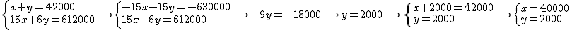

1.3. Métodos de resolución analítica
Tal y como hemos visto en el apartado anterior, un sistema se puede resolver gráficamente, pero, en muchas ocasiones, este método presenta algunos inconvenientes.
Por ejemplo, en el caso de que no dispongamos de una herramienta informática preparada para representar las gráficas, estaremos obligados a construir una tabla con los puntos para, posteriormente, realizar la representación de las rectas a mano. También nos puede ocurrir que, una vez representadas las rectas, el punto de corte esté muy alejado del origen de coordenadas o que sus coordenadas no sean números enteros.
Estas situaciones suponen, normalmente, un obstáculo para encontrar la solución exacta y justifican, de manera clara, la necesidad de que existan métodos analíticos de resolución de sistemas.
Existen tres métodos clásicos.
Método de sustitución
Consiste en despejar la incógnita que elijamos de una de las ecuaciones y, posteriormente, sustituirla en la otra.
En el siguiente vídeo puedes ver cómo se aplica este método a través de un ejemplo:
Vídeo de Tutomate alojado en Youtube
Método de igualación
Consiste en, elegida una misma incógnita para las dos ecuaciones, despejarla en ambas para, posteriormente, igualar las expresiones obtenidas.
En el siguiente vídeo puedes ver cómo se aplica este método a través de un ejemplo:
Vídeo de Tutomate alojado en Youtube
Método de reducción
Consiste en obtener un sistema en que los coeficientes de x o de y sean opuestos (con igual valor y distinto signo), para que así podamos eliminar dicha incógnita al sumar las dos ecuaciones. Para conseguir esto podemos multiplicar una o ambas ecuaciones por cualquier número distinto de 0 teniendo en cuenta lo que sea conveniente en cada caso.
En el siguiente vídeo puedes ver cómo se aplica este método a través de un ejemplo:
Vídeo de Tutomate alojado en Youtube
Comprueba lo aprendido
A las dos situaciones relacionadas con el fútbol que vimos en el punto anterior, le vamos a añadir una nueva pista. Plantea, en cada uno de los casos, un sistema de dos ecuaciones con dos incógnitas, resuélvelos por el método que prefieras y completa los espacios en blanco que nos dan la solución.
Caso práctico
A un partido benéfico celebrado en el estadio Ramón Sánchez Pizjuan, de Sevilla, han asistido 42000 espectadores. Se ha puesto a la venta únicamente dos tipos de entradas, a un precio de 15 € para los adultos y entradas infantiles a 6 €. La recaudación total ha sido de 612000 €. ¿Cuántas entradas de cada tipo se han vendido?
multiplicamos los dos miembros de la primera ecuación por -15 tendremos el mismo coeficiente de x en ambas ecuaciones aunque con signos contrarios, esto es, -15 y 15. Si sumamos las dos ecuaciones miembro a miembro veremos como la incógnita x se anula dando como resultado una ecuación en la que la única incógnita es y. Al resolverla, conoceremos el valor numérico de y.
Posteriormente, sustituiremos este valor de y en cualquiera de las ecuaciones originales lo que nos permitirá calcular el valor de x.

El método que hemos aplicado no es otro que el método de reducción.
Reflexiona
Uno de los motores que propulsa el lanzamiento del cohete Ariane 5 es el Vulcain 2.
Durante los 540 segundos que dura su funcionamiento consume las 155 toneladas de combustible que contiene y que están compuestas exclusivamente por oxígeno e hidrógeno líquido. Por cada tonelada de hidrógeno el Vulcain carga 5'2 toneladas de oxígeno.
Plantea y resuelve un sistema de dos ecuaciones con dos incógnitas que nos permita saber la cantidad exacta de oxígeno e hidrógeno líquido que se almacenan en el motor.
Para saber más
Para que puedas practicar los métodos de resolución anteriores te proponemos que visites el siguiente enlace del proyecto Descartes.